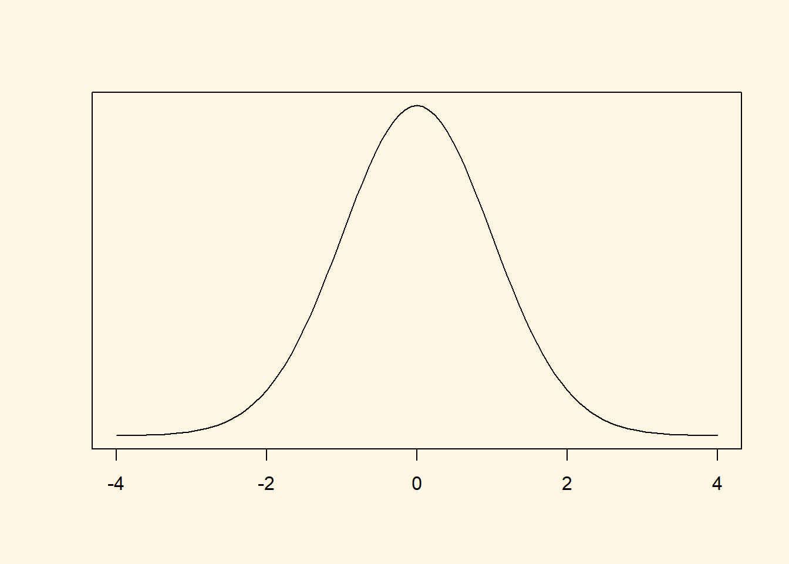
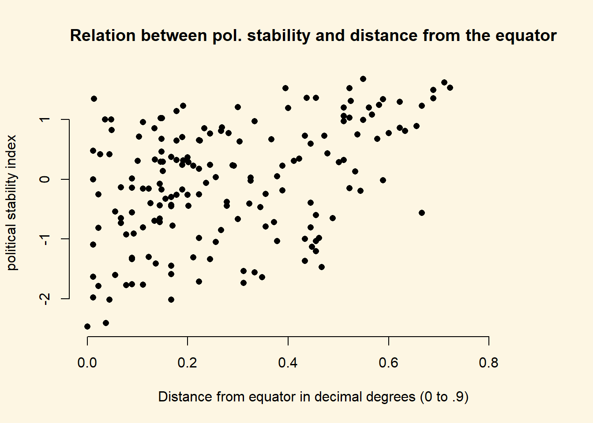

4.2 Solutions
4.2.0.1 Exercise 2
Turn former colonies into a factor variable and choose appropriate labels.
First, we load the dataset and then factorise the former colonies variable.
# load data
world.data <- read.csv("QoG2012.csv")
# turn variable into a factor
world.data$former_col <- factor(world.data$former_col, labels = c("not colonised", "was colonised"), levels = c(0,1))4.2.0.2 Exercise 3
How many countries were former colonies? How many were not?
We can get the numbers from a frequency table.
table(world.data$former_col)
not colonised was colonised
72 122 122 countries were victims of colonialization.
4.2.0.3 Exercise 4
Find the means of political stability in countries that (1) were former colonies, (2) were not former colonies.
We use the mean function to get the mean of political stability and subset for the groups of countries using the square brackets.
# mean of political stability in countries that were not colonised
mean(world.data$wbgi_pse[world.data$former_col=="not colonised"])[1] 0.2858409# mean of political stability in countries that were colonised
mean(world.data$wbgi_pse[world.data$former_col=="was colonised"])[1] -0.231612The average level of political stability in countries that were not colonised is 0.2858409. Mean political stability in countries that were colonised is -0.231612. The variable political stability wbgi_pse is an index. Larger values correspond with more political stability. We see that political stability is higher in countries that were not colonised.
Looking at this difference, we might conclude that the legacy of colonialism is still visible today and manifests itself in lower political stability. Let’s investigate further to see whether the difference in means is statistically significant.
4.2.0.4 Exercise 5
Is the the difference in means statistically significant?
Let’s first compute the difference in means. We call it fd here. We could name it anything but fd is shorthand for first difference. Differences between two means are sometimes referred to as first differences.
fd <- mean(world.data$wbgi_pse[world.data$former_col=="not colonised"]) - mean(world.data$wbgi_pse[world.data$former_col=="was colonised"])
fd[1] 0.5174529The numerical difference is 0.5174529. Is this difference small or large? That is difficult to say because the variable is not measured in intuitive units (income in dollars is an example of a variable that is measured in intuitive units).
Let’s look at the variable a little closer to understand this difference in substantive terms.
# the range
range(world.data$wbgi_pse)[1] -2.467461 1.675609# the distance from the minimum to the maximum value
diff(range(world.data$wbgi_pse))[1] 4.14307# the difference in means as percentage change over the range of the variable
fd / diff(range(world.data$wbgi_pse))[1] 0.124896Doing the above was not necessary to answer the question but it is helpful to understand the variable in substantive terms. The difference in means is 0.5174529. That constitutes 0.124896 (12%) of the range of the variable. So the difference in political stability between countries that were colonies and those that were not is large.
We now test whether the difference is statistically significant using the t-test.
# t test for difference in means
t.test(world.data$wbgi_pse[world.data$former_col == "not colonised"],
world.data$wbgi_pse[world.data$former_col == "was colonised"],
mu = 0, alt = "two.sided")
Welch Two Sample t-test
data: world.data$wbgi_pse[world.data$former_col == "not colonised"] and world.data$wbgi_pse[world.data$former_col == "was colonised"]
t = 3.4674, df = 139.35, p-value = 0.0006992
alternative hypothesis: true difference in means is not equal to 0
95 percent confidence interval:
0.2224004 0.8125053
sample estimates:
mean of x mean of y
0.2858409 -0.2316120 As we can see, the difference is not only large it is also a noticeable systematic difference. The p value is small. Smaller than the conventional alpha level of 0.05. We can also look at the confidence interval which ranges from 0.2224004 to 0.8125053. So, if we were to repeatedly sample, the confidence interval of each sample would include the true population mean \(95\%\) of the time. Or more intuitively, we are \(95\%\) confident that the average population level of political stability is within our interval.
4.2.0.5 Exercise 6
In layman’s terms, are countries which were former colonies more or less stable than those that were not?
The results from the t-test show that countries that were colonies are less stable than those that were not. The difference is large and systematic.
4.2.0.6 Exercise 7
How about if we choose an alpha level of 0.01?
The p-value is 0.0006992. That is smaller than an alpha level of 0.01 as well. Therefore, picking an alpha level of 0.01 does not change our results.
4.2.0.7 Exercise 8
What is the level of measurement of the United Nations Development index variable undp_hdi?
We googled united nations human development index and found that the variable is a composite index of three key dimensions: a long and healthy life, being knowledgeable and having a decent standard of living. The description goes on to tell us how the dimensions are measured and that the index is the geometric average of the components. The variable is, therefore, continuous.
4.2.0.8 Exercise 9
Check the claim that its true population mean is 0.85.
Let’s estimate the mean from our sample
summary(world.data$undp_hdi) Min. 1st Qu. Median Mean 3rd Qu. Max. NA's
0.2730 0.5390 0.7510 0.6982 0.8335 0.9560 19 Our estimate is 0.69824. The claim is that it is 0.85.
Null hypothesis: The true population mean of the human development index is: 0.85. Alternative hypothesis: The true population mean is different from 0.85.
We pick an alpha level of 0.05 for our test.
t.test(world.data$undp_hdi, mu = 0.85, alt = "two.sided")
One Sample t-test
data: world.data$undp_hdi
t = -11.139, df = 174, p-value < 0.00000000000000022
alternative hypothesis: true mean is not equal to 0.85
95 percent confidence interval:
0.6713502 0.7251298
sample estimates:
mean of x
0.69824 The p-value is lower than 0.05 and hence we reject the null hypothesis (hdi is 0.85). Looking at our confidence interval, we expect that if we were to repeatedly sample, the population mean would fall into the interval 0.6713502 to 0.7251298 \(95\%\) of the time.
4.2.0.9 Exercise 10
Calculate the t statistic.
We could take the t statistic from the t test above. But we are going through the individual steps here.
From the summary() function above, we know that there are 19 missings on the variable which we drop. We create a copy of our data in the original state and then drop the missing rows from world.data.
# copy of world data
world.data.full <- world.data
# drop missings on undp_hdi
world.data <- world.data[ !is.na(world.data$undp_hdi), ]Step 1: We get the number of observations.
n <- length(world.data$undp_hdi)
n[1] 175Step 2: We calculate the standard variation of the random variable undp_hdi.
# sample standard deviation of undp_hdi
sd_hdi <- sd(world.data$undp_hdi)Step 3: We calculate the standard error of the mean which is:
\[ SE({\bar{Y}}) = \frac{ s_{Y}} { \sqrt{n}} \]
# standard error of the mean of undp_hdi
se.y_bar <- sd_hdi / sqrt(n)Step 4: We compute the t-statistic as the difference between our estimated mean and the mean under null and then divide by the standard error of the estimated mean.
\[ t = \frac{ \bar{Y} - \mu_{0}} { SE({\bar{Y}}) } \]
Note: By dividing by the standard error of the estimated mean, we are making the difference of the means (our estimated mean - the mean under the null), free of the units that the variables were measured in. The t-value is the difference of the means, were its units are standard deviations.
The t-value follows a t-distribution with n-1 (174) degrees of freedom. It is well approximated by a standard normal distribution.
hdi_mean <- mean(world.data$undp_hdi)
t.statistic <- ( hdi_mean - 0.85 ) / se.y_bar
t.statistic[1] -11.13908The t.statistic is -11.13908. Given that this t statistic follows a standard normal distribution approximately (because the sample is large), we would reject the null hypothesis if the t-value is more than 1.96 standard deviations away from 0. This t-value is 11 standard deviations away from zero. The t-value is very far in the tails of the distribution. It is very unlikely that we would have estimated the mean that we did estimate (0.69824) if the population average of HDI really was 0.85.
We can reject the null hypothesis.
4.2.0.10 Exercise 11
Calculate the p value.
We have the t statistic already. We will follow the steps to get the p value. But first, take a look at what the distribution of our t statistic looks like. Our t statistic is -11.13908. This is very very far in the left tail.

Step 1: We compute the cumulative probability to get our t-value or something smaller from this distribution.
cum.prob.at.least.t <- pt(t.statistic, df = (n-1) )
cum.prob.at.least.t[1] 0.0000000000000000000002127538Notice that our t value is negative. By calculating the probability to get a t-value as large or smaller, we alredy have the proability that we see a t value like this in the left tail. We are conducting a two-sided test. Therefore, we want the proability in the right tail as well, i.e., to see a t value that is 11.139 or larger. So in the next step we take the probability we got times 2.
cum.prob.at.least.t * 2[1] 0.0000000000000000000004255075The p value is extremely small. In fact, it is so small that the t-test did not report the correct p value either but simply stated that the p value is smaller than 2.2e-16.
Notice also that in the seminar we calucated (1 - pt(t.statistic, df = n-1))*2. This was because our t value was positive in the seminar. Here it is negative. Here in this task, we could have calculated (1 - pt(abs(t.statistic), df = n-1))*2 where abs(t.statistic) returns the absolute value of the t statistic and hence turns it into a positive number.
If you do that, R will round and return the p value as 0. We are not holier than the pope and would have accepted any of these answers (0, <2.2e-16, 4.255075e-22).
4.2.0.11 Exercise 12
Construct a confidence interval around your mean estimate.
There are two ways to do this which yield slighly different answers.
Approach 1: Our sample is large. The t statistic follows approximately a standard normal distribution. We can, therefore, use the critical value from the standard normal distribution. \(95\%\) of the area under the standard normal distribution is within \(1.96\) standard deviations from the mean.
# lower bound
lb <- hdi_mean - 1.96 * se.y_bar
# upper bound
ub <- hdi_mean + 1.96 * se.y_bar
# results
lb[1] 0.6715367ub[1] 0.7249432# best guess of the population mean
hdi_mean[1] 0.69824Our best guess of the population mean is 0.69824. We are \(95\%\) confident that our interval from 0.6715367 to 0.7249432 includes the population mean.
Approach 2: We get the critical value from a t distribution with n-1 (174) degrees of freedom. To find the critical value, we use the t distribution’s quantile function qt(cumulative.probability, degrees of freedom).
t.critical <- qt(0.975, df = 174)
t.critical[1] 1.973691So, in our t distribution \(95\%\) are within precisely 1.973691 standard deviations from the mean.
Notice, that the confidence interval covers 95% of the area under the curve and is centered on the mean. There are \(2.5\%\) in each tail. qt() gives us the critical value at the cumulative probability of whatever we enter into the function. We input .975, so we get the critical value at the point where the right tail starts.
# lower bound
lb2 <- hdi_mean - t.critical * se.y_bar
# upper bound
ub2 <- hdi_mean + t.critical * se.y_bar
# results
lb2[1] 0.6713502ub2[1] 0.7251298Using this more exact approach, we show that the \(95\%\) confidence interval covers values of the human development index from 0.6713502 to 0.7251298.
4.2.0.12 Exercise 13
Discuss your findings in terms of the original claim. Interpret the t value, the p value, and the confidence interval.
We can reject the original claim that the mean of HDI is 0.85. Given, an alpha level of 0.05, our large t-value (-11.13908 - the absolute value is large) implies that our estimate (0.69824) is extremely unlikely assuming that 0.85 is the population mean. From exercise 11, we know the p-value which is the probability that we have mistakenly rejected a correct null hypothesis. That probability is
\[ 4.255075e^{-22} = 4.255075 * 10^{-22} = \frac{4.255075}{10^{22}} = 0.0000000000000000000004255075\].
Our best guess of the population mean is \(0.7 \pm 0.03\) (rounded to two digits).
4.2.1 Optional Exercises that require reading Extra Info below
4.2.1.1 Optional Exercise 1
Create a scatter plot with latitute on the x-axis and political stability on the y-axis.
The relationship between two continuous variables is best illustrated with a scatterplot.
plot(
y = world.data$wbgi_pse,
x = world.data$lp_lat_abst,
pch = 16,
bty = "n",
xlim = c(0, 0.9),
main = "Relation between pol. stability and distance from the equator",
xlab = "Distance from equator in decimal degrees (0 to .9)",
ylab = "political stability index"
)
4.2.1.2 Optional Exercise 2
What is the correlation coefficient of political stability and latitude?
cor(world.data$wbgi_pse, world.data$lp_lat_abst, use = "complete.obs")[1] 0.4238086the correlation coefficient ranges from -1 to 1 and is a measure of linear association of two continuous variables. The variables are positively related. That means, as we move away from the equator, we tend to observe higher levels of political stability.
4.2.1.3 Optional Exercise 3
If we move away from the equator, how does political stability change?
Political stability tends to increase as we move away from the equator.
4.2.1.4 Optional Exercise 4
Does it matter whether we go north or south from the equator?
It does not matter whether we go north or south. Our latitude is measured in decimal degrees. Thus, a value of 0.9 could correspond to either the North Pole or the South Pole.
4.2.2 Advanced Exercises
These exercises were hard and go beyond what we expect from you at this point. Good job, if you were able to solve them!
4.2.2.1 Advanced Exercise 1
Calculate the numerical difference in means (political stability conditional on colonialization) using the means() function.
Notice: Earlier we dropped missing values on undp_hdi. We thereby dropped values that were not missing on wbgi_pse from the dataset. That was valuable information. Not reloading the dataset would be a mistake.
# use full dataset
world.data <- world.data.full
table(world.data$former_col) # check the labels of the former colonies variable
not colonised was colonised
72 122 # mean political stability of not colonised group
mean.not.col <- mean(world.data$wbgi_pse[world.data$former_col=="not colonised"])
mean.not.col[1] 0.2858409# mean political stability of colonised group
mean.was.col <- mean(world.data$wbgi_pse[world.data$former_col=="was colonised"])
mean.was.col[1] -0.231612# difference in means
fd <- mean.not.col - mean.was.col
fd[1] 0.5174529The difference in means is 0.5174529. Countries that were not colonised are more politically stable.
4.2.2.2 Advanced Exercise 2
Calculate the standard deviation of the difference in means (hint: using just the sd() function is incorrect in this context).
The standard error of the difference between two means is:
\[ \sqrt{\frac{\sigma^2_{Y_A}}{n_A} + \frac{\sigma^2_{Y_B}}{n_B}} \]
Where \(A\) and \(B\) are the two groups.
# variance of political stability in the two groups
var_not_col <- var(world.data$wbgi_pse[world.data$former_col=="not colonised"])
var_was_col <- var(world.data$wbgi_pse[world.data$former_col=="was colonised"])
# number of observations in each group
n_not_col <- length(world.data$wbgi_pse[world.data$former_col=="not colonised"])
n_was_col <- length(world.data$wbgi_pse[world.data$former_col=="was colonised"])
# standard error of the difference in means
fd.se <- sqrt( (var_not_col/n_not_col) + (var_was_col/n_was_col) )
fd.se[1] 0.1492324The standard error of the difference in means is 0.1492324.
4.2.2.3 Advanced Exercise 3
Is the difference in means more than \(1.96\) standard deviations away from zero? Interpret the result.
fd - 2*fd.se[1] 0.2189881The difference in means is further than two standard deviations away from zero. Given an alpha level of 0.05, we can reject the null hypothesis that political stability is the same in countries that were colonised and those that were not.
4.2.2.4 Advanced Exercise 4
We claim, the difference in means in terms of political stability between countries that were former colonies and those that were not is 0.3. Check this hypothesis.
We use the t-test for the difference in means to test this claim. Normally, our null would be that the difference in means is zero, i.e. there is no difference. Here, the claim is that the difference is 0.3. So, all we have to do is adjust the null hypothesis accordingly.
t.test(world.data$wbgi_pse[world.data$former_col == "not colonised"],
world.data$wbgi_pse[world.data$former_col == "was colonised"],
mu = 0.3, alt = "two.sided")
Welch Two Sample t-test
data: world.data$wbgi_pse[world.data$former_col == "not colonised"] and world.data$wbgi_pse[world.data$former_col == "was colonised"]
t = 1.4571, df = 139.35, p-value = 0.1473
alternative hypothesis: true difference in means is not equal to 0.3
95 percent confidence interval:
0.2224004 0.8125053
sample estimates:
mean of x mean of y
0.2858409 -0.2316120 We cannot reject the claim that the true difference in means is 0.3.
4.2.2.5 Advanced Exercise 5
First, we drop missings from wdi_gdpc.
world.data <- world.data[ !is.na(world.data$wdi_gdpc), ]An angry citizen who wants to defund the Department of International Development (DFID) claims that countries that were former colonies have reached \(75\%\) of the level of wealth of countries that were not colonised. Check this claim.
The null hypothesis is that there is no difference between the level of wealth in countries that were former colonies and 0.75 times the level of wealth in countries that were not former colonies
# the claim of the citizen
claim <- mean(world.data$wdi_gdpc[world.data$former_col=="not colonised"]) * 0.75
claim[1] 12311.54# estimated level of wealth in countries that were colonised
estimate <- mean(world.data$wdi_gdpc[world.data$former_col=="was colonised"])
estimate[1] 6599.714Our estimate is roughly half the angry citizen’s claim. The substantial difference is huge. To cover all our bases, let’s perform the t-test for the difference in means.
How would we do this though? This one is tricky because the citizen’s claim is not actually in our data. At the same time we don’t know the true level of wealth in countries that were not colonised, we only have an estimate. We have to manipulate our data to get there.
First, we create a copy of the wealth variable with a new name.
world.data$angry_gdp <- world.data$wdi_gdpcNow, we adjust the level of wealth in the group of countries that were not colonised down to the citizen’s claim. The citizen’s claim is that we should then not find a difference in means between the two groups (“was colonised” and “not colonised”) anymore.
world.data$angry_gdp[world.data$former_col=="not colonised"] <- world.data$angry_gdp[world.data$former_col=="not colonised"] * 0.75
mean(world.data$angry_gdp[world.data$former_col=="not colonised"])[1] 12311.54We can see that the level of mean wealth of our manipulated variable for countries that were not colonised now corresponds to the citizen’s claim. We can now check the difference in means.
t.test(world.data$angry_gdp[world.data$former_col=="not colonised"],
world.data$angry_gdp[world.data$former_col=="was colonised"],
mu = 0, alt = "two.sided")
Welch Two Sample t-test
data: world.data$angry_gdp[world.data$former_col == "not colonised"] and world.data$angry_gdp[world.data$former_col == "was colonised"]
t = 3.6218, df = 127.72, p-value = 0.0004206
alternative hypothesis: true difference in means is not equal to 0
95 percent confidence interval:
2591.29 8832.37
sample estimates:
mean of x mean of y
12311.544 6599.714 Clearly, we can reject the citizen’s claim. Our p value implies that the probability that we see this huge difference in our data, given that there really is no difference, is \(0.04\%\). Our conventional alpha level is \(5\%\).